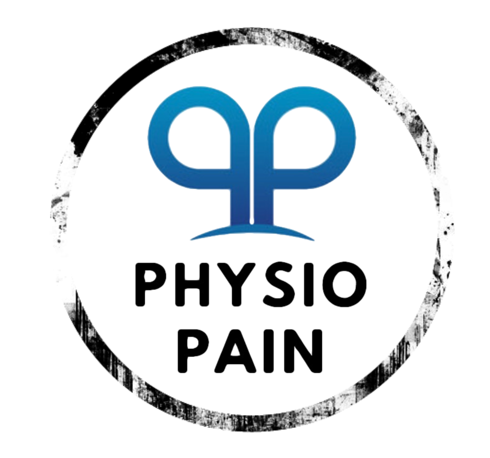

AgendarEspecialistas en extremidad superior y rehabilitación musculoesquelética (UC), parte de una red de kinesiólogos de Antofagasta.
Agendar por WhatsAppAtención especializada para lesiones traumatológicas y musculoesqueléticas.
Técnicas para recuperar el músculo después del esfuerzo o la lesión.
Equipamiento actual en rehabilitación.
Atención de lunes a viernes, en el Edificio Portal del Sol, oficina 501.
Escríbenos por WhatsApp para agendar.
También +56 9 8289 7057 · Manuel Antonio Matta 2019, of. 501, Antofagasta
kinesiologia@physiopainchile.cl